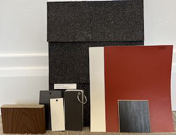

Our house will have a mountain-influenced organic modern style. This means lots of natural colors and textures with black accents. The exterior will be barn red as a nod to the rural environment in which we are building. The first picture below is the final materials selection for the entire house. The gallery below shows selections for different spaces throughout the home.
Final materials selection for the whole house
Design Gallery

Exterior colors and finishingsExterior lightingGarage doors - ours are whiteSaunaMain floor paint and flooringWall hanging for main entryChandelier for double-height main entryKitchen finishingsKitchen island lightingPicture wall above wainscoting in dining roomPowder room finishingsGreat room flooring, fireplace stone, and paint colorsSofa for the great roomThrow pillowLarge poufChairs for the great roomRug for the great roomStorage benchSofas for the back covered porchUpstairs hall bathroomPrincipal bath - we actually changed the small tile and added another large format tile for the tub and shower laterMirror for the principal bathHeadboard for the primary bedroomBasement bathroom - we switched the large format tile laterBathroom lightingEpoxy flooring for garage and rubber flooring for exercise room